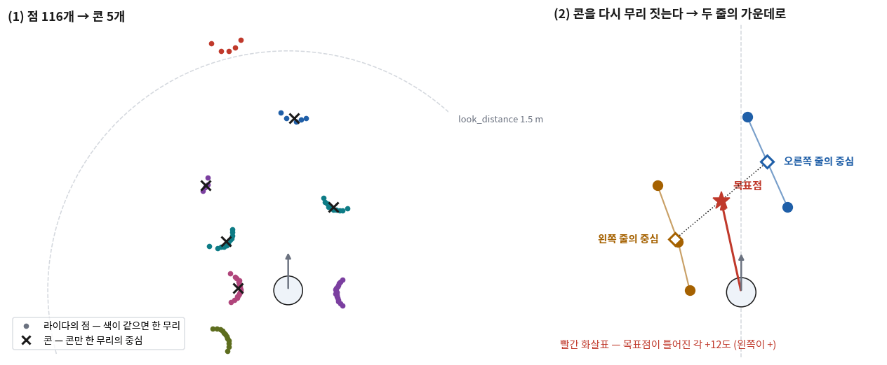

콘 인식과 주행 — 프로젝트의 출발점
- 라이다의 점 수백 개 가운데 어느 점들이 콘 하나인가?
- 콘이 여럿 보일 때 어느 콘이 왼쪽 줄이고 어느 콘이 오른쪽 줄인가?
- 두 줄 사이로 가려면 바퀴에 어떤 숫자를 보내야 하나?
24회에서 스캔에서 쓸 수 있는 값을 골랐고, 25회에서 그 값을 점의 좌표로 폈다. 오늘은 그 점에서 출발해 콘 사이로 가는 속도 명령까지 한 번에 잇는다. 프로젝트에서 여러분이 만들 노드의 뼈대다.
오늘 보이는 것은 대략의 알고리즘과 그것을 옮긴 최소한의 코드다. 이 코드가 여러분의 트랙에서 잘 달리는지, 숫자를 얼마로 두어야 하는지는 아직 아무도 모른다. 그것은 여러분이 트랙 앞에서 직접 돌려 보며 판단할 일이다. 코드를 다듬는 일은 에이전트에게 맡겨도 되지만, 무엇을 왜 그렇게 하는지는 여러분이 알고 있어야 고칠 자리를 찾을 수 있다.
① 점에서 바퀴까지 🔴 사람이 이해한다
로봇은 콘 트랙을 어떻게 볼까? 콘이 두 줄로 서 있고, 로봇은 그 사이로 가야 한다. 라이다가 주는 것은 거리 값의 긴 줄뿐이다. 그 사이를 네 단계로 잇는다.
/scan → 점 거리 값을 (x, y)로 편다 (24·25회)
→ 콘 가까운 점끼리 무리 짓고, 콘만 한 무리를 고른다 (②절 — 첫 번째 무리 짓기)
→ 두 줄 가까운 콘끼리 다시 무리 짓는다 (③절 — 두 번째 무리 짓기)
→ /cmd_vel 두 줄 사이를 보고 그쪽으로 돈다 (④절)아래 그림이 그 과정이다. 콘을 40cm 간격으로 세우고 두 줄 사이를 80cm로 둔 굽은 트랙에서, 로봇이 왼쪽으로 굽는 길에 들어선 자리다. 콘의 자리를 정해 두고 그 자리의 라이다가 볼 점을 계산해서 그렸다. 두 칸 모두 위쪽이 로봇의 앞(x), 왼쪽이 로봇의 왼쪽(y)이다.

② 점 → 콘 — 첫 번째 무리 짓기 🔴 사람이 이해한다
사람 눈에는 그림 (1)의 점들이 「저기 한 덩이, 여기 한 덩이」로 보인다. 그런데 프로그램에게는 좌표의 긴 줄일 뿐이다. 어느 점과 어느 점이 같은 물체인지 무엇으로 가를까?
2-1 무리 짓기(clustering)
무리 짓기(clustering, 군집화)는 가까이 있는 것끼리 한 무리(cluster)로 묶는 것이다. 방법은 여럿인데, 라이다의 점은 이미 각도 순서로 줄지어 있으므로 가장 간단한 방법으로도 된다.
점을 각도 순서대로 하나씩 본다
바로 앞 점과의 거리가 cluster_gap 이하 → 앞 점과 같은 무리
아니다 → 새 무리를 연다
같은 물체의 겉면에 찍힌 점은 이웃끼리 촘촘하고, 다른 물체로 넘어갈 때는 사이가 훌쩍 뛴다는 것에 기댄 규칙이다.
같은 물체 위의 이웃한 두 점 사이는 대략 거리 × 각도 간격(rad)이다. 이 로봇의 각도 간격 1.67도는 0.0291 rad이므로 1m 앞에서 2.9cm, 3m 앞에서 8.7cm다(23회).
그래서 cluster_gap을 10cm로 두면 3.4m 안쪽의 물체는 한 무리로 묶인다. 콘과 콘 사이는 이보다 훨씬 넓다.
2-2 콘 고르기
무리가 나왔다고 다 콘은 아니다. 벽 조각도, 책상 다리도 무리가 된다. 색도 모양도 모르는 라이다가 쓸 수 있는 것은 점의 개수와 무리의 폭, 그리고 어디에 있나다.
| 기준 | 코드에서 | 버리는 것 |
|---|---|---|
| 점이 3개 이상 | c.size() < 3이면 버린다 | 잡음, 너무 멀어 점이 한두 개뿐인 물체 |
| 폭(양 끝 점 사이)이 40cm 이하 | cone_max_width | 벽, 넓은 가구 |
| 로봇 앞에 있다 | 중심의 x > 0 | 이미 지나온 콘 |
look_distance(1.5m) 안에 있다 | 중심까지의 거리 | 먼 콘 — 점이 적어 자리가 흔들리고, 지금 갈 방향과 상관이 적다 |
남은 무리마다 점들의 평균을 그 콘의 자리로 삼는다. 점 하나보다 덜 흔들린다. 단, 라이다는 콘의 앞쪽 반만 보므로 평균은 콘의 진짜 중심보다 로봇 쪽으로 몇 cm 치우친다. 콘 사이로 지나가는 데는 대체로 문제가 되지 않는다.
위 기준만으로는 콘과 책상 다리를 가르지 못한다. 2026년 11월에 콘이 없는 실습실에서 비슷한 기준을 돌렸더니 「콘」이 10~14개 나왔다 — 책상 다리, 의자, 벽의 모서리였다. 코드로 더 똑똑하게 풀기보다 트랙 둘레를 비우는 것이 쉽다. 콘 트랙은 벽과 가구에서 떨어진 넓은 곳에 세우는 것이 좋다.
2-3 코드
점을 무리 짓고, 콘만 한 무리의 평균을 모은다.
// (1) 점을 무리 짓고, 콘만 한 무리의 중심을 콘의 자리로 삼는다
std::vector<Point> find_cones(const std::vector<Point> & points) const
{
std::vector<std::vector<Point>> clusters;
for (const Point & p : points) {
if (clusters.empty() || distance(clusters.back().back(), p) > cluster_gap_) {
clusters.push_back({}); // 앞 점과 멀다 — 새 무리를 연다
}
clusters.back().push_back(p);
}
// 한 바퀴의 끝과 처음은 이어져 있다 — 정면에 선 콘이 둘로 갈리지 않게 합친다
if (clusters.size() > 1 && distance(clusters.back().back(), clusters.front().front()) <= cluster_gap_) {
clusters.front().insert(clusters.front().begin(), clusters.back().begin(), clusters.back().end());
clusters.pop_back();
}
std::vector<Point> cones;
for (const std::vector<Point> & c : clusters) {
const Point center = mean(c);
if (c.size() < 3 || distance(c.front(), c.back()) > cone_max_width_ ||
center.x <= 0.0 || std::hypot(center.x, center.y) > look_distance_)
{
continue; // 점이 적거나, 너무 넓거나, 뒤에 있거나, 너무 멀다
}
cones.push_back(center);
}
return cones;
}🆕 이 코드에서 처음 나오는 것
std::vector<std::vector<Point>>- 「점들의 벡터」를 원소로 갖는 벡터다. 무리 하나가
std::vector<Point>이고, 무리 여럿을 다시 벡터에 담았다.clusters.back().back()은 마지막 무리의 마지막 점이다. clusters.push_back({})- 빈 무리 하나를 끝에 붙인다.
{}가 「빈std::vector<Point>」로 읽힌다. - 한 바퀴의 끝과 처음 합치기
- 각도 0도, 곧 정면에 선 콘은 점의 절반이 배열의 맨 앞에, 절반이 맨 뒤에 들어온다. 그대로 두면 콘 하나가 두 무리가 된다(24회에서 정면 구간이 배열의 양 끝에 걸쳤던 것과 같은 일이다).
insert(위치, 처음, 끝)는 반복자 한 쌍(12회)이 가리키는 원소를 그 위치에 끼워 넣는다.
③ 콘 → 왼쪽 줄 · 오른쪽 줄 — 두 번째 무리 짓기 🔴 사람이 이해한다
콘의 자리가 나왔다. 이제 어느 콘이 왼쪽 줄이고 어느 콘이 오른쪽 줄인지 가려야 두 줄 사이를 찾을 수 있다. 가장 먼저 떠오르는 방법은 y의 부호를 보는 것이다 — y가 +면 왼쪽, −면 오른쪽. 그걸로 충분할까?
3-1 y의 부호로는 왜 모자라나
곧은 길에서 로봇이 길과 나란히 서 있으면 y의 부호로 충분하다. 그런데 굽은 길에서는 사정이 다르다. 그림 (2)의 오른쪽 줄을 보면, 로봇에서 먼 콘일수록 왼쪽으로 휘어 들어온다. 위쪽 파란 콘은 y가 −0.04m로 거의 0이다. 길이 조금만 더 굽었거나 로봇이 조금만 오른쪽을 보고 있었다면 이 콘은 y가 +가 되고, y의 부호로는 왼쪽 콘이 된다. 그러면 목표점이 왼쪽 줄 쪽으로 끌려가 로봇이 콘을 향해 돈다.
사람은 이것을 어떻게 가를까? 콘 하나하나의 좌우를 따지지 않는다. 줄지어 선 모양을 본다 — 이 콘과 저 콘이 한 줄로 이어져 있다는 것을 본다.
3-2 콘을 다시 무리 짓기
「한 줄로 이어져 있다」를 규칙으로 쓰면 ②절과 같은 무리 짓기가 된다. 대상이 점에서 콘으로 바뀌었을 뿐이다.
아직 줄이 없는 콘 하나에서 새 줄을 연다
줄에 든 콘마다, 그 콘과 row_gap 안에 있는 콘을 같은 줄에 넣는다
더 넣을 콘이 없으면 그 줄은 끝났다
남은 콘이 있으면 다시 새 줄을 연다
→ 콘이 많은 두 줄만 남긴다점과 다른 것이 하나 있다. 점은 각도 순서로 놓여 있어서 바로 앞 점 하나만 보면 됐다. 콘은 순서가 없으므로 줄에 든 모든 콘의 이웃을 찾아 넣는다. 이웃의 이웃도 같은 줄이 되므로, 가까운 콘끼리 사슬처럼 이어진 것이 한 줄이 된다.
이 규칙이 통하려면 조건이 하나 있다. 같은 줄의 이웃한 콘 사이 < row_gap < 두 줄 사이여야 한다. 그림의 트랙에 숫자를 넣어 보면 이렇다.
같은 줄의 이웃한 콘 사이 곧은 길 0.40 m
굽은 길의 바깥 줄 0.40 × 1.9 / 1.5 = 0.51 m (길 가운데가 반지름 1.5 m, 바깥 줄은 1.9 m)
두 줄 사이 0.80 m
row_gap 0.65 m ← 둘 사이에 여유 있게row_gap을 0.51과 0.80의 딱 가운데보다 조금 넉넉히 잡았다.
거꾸로 말하면 같은 줄의 콘 간격이 두 줄 사이와 비슷하면 이 방법은 줄을 가르지 못한다. 콘을 60cm 간격으로, 두 줄을 70cm 사이로 세운 트랙에서 계산해 봤더니 출발 자리에서 두 줄이 한 줄로 이어졌다. 트랙을 세울 때 이 조건을 같이 생각해 두면 좋다.
3-3 어느 줄이 왼쪽인가
두 줄로 나눴지만 어느 쪽이 왼쪽인지는 아직 모른다. 여기서는 줄마다 로봇에 가장 가까운 콘을 본다. 로봇 바로 옆의 콘은 길이 굽어도 좌우가 잘 바뀌지 않는다. 둘 가운데 y가 더 큰 쪽이 왼쪽 줄이다. 줄이 하나만 남았으면 그 콘의 y 부호로 정한다.
3-1의 y 부호와 비슷해 보이지만 다르다. 앞의 것은 콘마다 따로 좌우를 정했고, 이것은 줄을 먼저 만든 뒤 줄 단위로 한 번 정한다. 그림 (2)의 y ≒ −0.04인 콘은 y가 +가 되어도 오른쪽 줄에 이어져 있는 한 오른쪽 줄에 남는다.
3-4 코드
// (2) 콘을 다시 무리 짓는다 — 두 콘이 row_gap 안이면 같은 줄. 줄에 든 콘의 이웃도 그 줄에 넣는다
std::vector<std::vector<Point>> make_rows(const std::vector<Point> & cones) const
{
std::vector<std::vector<Point>> rows;
std::vector<bool> used(cones.size(), false);
for (std::size_t i = 0; i < cones.size(); ++i) {
if (used[i]) {
continue;
}
rows.push_back({cones[i]}); // 아직 줄이 없는 콘에서 새 줄을 연다
used[i] = true;
for (std::size_t k = 0; k < rows.back().size(); ++k) { // 줄에 들어온 콘마다
for (std::size_t j = 0; j < cones.size(); ++j) {
if (!used[j] && distance(rows.back()[k], cones[j]) <= row_gap_) {
rows.back().push_back(cones[j]); // 그 이웃도 같은 줄이다
used[j] = true;
}
}
}
}
// 콘이 많은 두 줄만 남긴다 — 혼자 떨어진 콘 하나는 줄이 아니다
std::sort(rows.begin(), rows.end(), [](const auto & a, const auto & b) { return a.size() > b.size(); });
if (rows.size() > 2) {
rows.resize(2);
}
return rows;
}
// (3) 어느 줄이 왼쪽인가 — 줄마다 로봇에 가장 가까운 콘을 보고, y 가 더 큰 쪽이 왼쪽 줄
void split_left_right(const std::vector<std::vector<Point>> & rows,
std::vector<Point> & left, std::vector<Point> & right) const
{
if (rows.size() == 2) {
const bool first_is_left = nearest(rows[0]).y > nearest(rows[1]).y;
left = first_is_left ? rows[0] : rows[1];
right = first_is_left ? rows[1] : rows[0];
} else if (rows.size() == 1) {
(nearest(rows[0]).y > 0.0 ? left : right) = rows[0]; // 한 줄뿐이면 y 의 부호로
}
}🆕 이 코드에서 처음 나오는 것
std::vector<bool> used(cones.size(), false)- 콘마다 「이미 어느 줄에 들어갔나」를 적어 두는 표다. 크기가 콘의 개수이고 처음엔 전부
false다. 한 콘이 두 줄에 들어가지 않게 한다. - 도는 중에 커지는 벡터 —
k < rows.back().size() - 안쪽 반복이 줄에 콘을 넣으면
rows.back().size()가 커지고, 바깥 반복은 새로 들어온 콘의 이웃도 찾게 된다. 범위 기반for는 도는 중에 벡터가 커지면 안전하지 않다(12회의 반복자 무효화). 그래서 인덱스로 돈다. std::sort(…, [](const auto & a, const auto & b) { … })- 13회의 정렬에 「무엇이 앞에 오나」를 람다로 준 것이다. 콘이 많은 줄이 앞에 온다.
resize(2)는 앞의 두 줄만 남기고 나머지를 버린다. (조건 ? left : right) = rows[0];- 조건에 따라
left나right가운데 하나에 넣는다. 조건 연산자가 변수 자체를 돌려주므로 그 자리에 바로 대입할 수 있다.
④ 목표 방향과 바퀴 🔴 사람이 확인한다
두 줄이 나왔다. 그 사이로 가려면 로봇은 어느 쪽을 보고, 바퀴에는 무엇을 보내야 할까?
4-1 목표점
줄마다 콘들의 평균을 그 줄의 중심으로 삼고, 두 줄 중심의 가운데를 목표점으로 한다. 줄 전체의 평균을 쓰므로 콘 하나가 흔들려도 목표점은 덜 흔들린다.
굽은 길에서는 한쪽 줄만 보일 때가 있다. 그때 「모르겠다」로 서 버리면 코너를 못 돈다. 그래서 왼쪽 줄만 보이면 그 중심에서 트랙 폭의 절반(track_width ÷ 2)만큼 오른쪽을, 오른쪽 줄만 보이면 그만큼 왼쪽을 목표점으로 한다.
4-2 비례 제어와 값 제한
목표점 (x, y)가 정해지면 그것이 정면에서 몇 도 틀어져 있는지를 구한다. 25회 「조금 더」의 atan2다.
틀어진 각 = atan2(목표점의 y, 목표점의 x) 단위 rad. 왼쪽이면 +, 오른쪽이면 −
회전 속도 = kp × 틀어진 각, ±max_angular 안으로 자른다
직진 속도 = speed (일정)
많이 틀어졌으면 많이 돌리고, 조금 틀어졌으면 조금 돌린다. 이렇게 벗어난 양(오차)에 비례해서 고치는 것을 비례 제어(proportional control, P 제어)라고 하고, 곱하는 숫자 kp를 비례 이득(gain)이라고 한다.
부호는 ROS 좌표 규약이 맞춰 준다 — 목표점이 왼쪽이면 y가 +, 틀어진 각이 +, angular.z가 +, 로봇은 왼쪽으로 돈다.
목표점이 순간적으로 엉뚱한 데 잡히면 틀어진 각이 90도가 될 수도 있다. 그래서 계산한 값을 정해 둔 범위 안으로 잘라 보낸다. 이것을 값 제한(clamping)이라고 한다.
std::clamp(값, 아래, 위)는 값이 아래보다 작으면 아래를, 위보다 크면 위를, 그 사이면 값을 그대로 돌려준다.
왼쪽 줄의 중심 (0.33, 0.41), 오른쪽 줄의 중심 (0.80, -0.16) (그림의 ◇ 둘)
목표점 = 가운데 (0.564, 0.123) 틀어진 각 = atan2(0.123, 0.564) = 0.214 rad = 12도
kp = 1.0 회전 속도 = 1.0 × 0.214 = 0.21 rad/s 한계(0.5) 안 → 그대로
kp = 5.0 회전 속도 = 5.0 × 0.214 = 1.07 rad/s 한계 밖 → 0.50 으로 잘린다4-3 코드
스캔이 올 때마다 ②~④를 한 번씩 거쳐 속도 명령을 보낸다. 콘이 하나도 안 보이면 0을 보내 선다.
// 스캔 한 장마다 — 점 → 콘 → 두 줄 → 목표 방향 → 속도 명령
void on_scan(const sensor_msgs::msg::LaserScan & scan)
{
const std::vector<Point> cones = find_cones(to_points(scan));
std::vector<Point> left, right;
split_left_right(make_rows(cones), left, right);
geometry_msgs::msg::TwistStamped cmd; // 처음엔 전부 0 — 콘이 안 보이면 이대로 보내 선다
cmd.header.stamp = this->now();
double heading = 0.0;
if (!left.empty() || !right.empty()) {
const Point target = pick_target(left, right);
heading = std::atan2(target.y, target.x); // 목표점이 틀어진 각. 왼쪽이 +
cmd.twist.linear.x = speed_;
cmd.twist.angular.z = std::clamp(kp_ * heading, -max_angular_, max_angular_);
}
cmd_pub_->publish(cmd);
RCLCPP_INFO_THROTTLE(this->get_logger(), *this->get_clock(), 1000,
"콘 %zu개 · 왼쪽 줄 %zu개 · 오른쪽 줄 %zu개 · 틀어진 각 %.1f도 · 보낸 속도 %.2f m/s, %.2f rad/s",
cones.size(), left.size(), right.size(), heading * 180.0 / M_PI,
cmd.twist.linear.x, cmd.twist.angular.z);
}
// (4) 목표점 — 두 줄 중심의 가운데. 한 줄만 보이면 그 줄에서 트랙 폭의 절반만큼 안쪽
Point pick_target(const std::vector<Point> & left, const std::vector<Point> & right) const
{
if (!left.empty() && !right.empty()) {
const Point l = mean(left);
const Point r = mean(right);
return Point{(l.x + r.x) / 2.0, (l.y + r.y) / 2.0};
}
if (!left.empty()) {
const Point l = mean(left);
return Point{l.x, l.y - track_width_ / 2.0};
}
const Point r = mean(right);
return Point{r.x, r.y + track_width_ / 2.0};
}
프로그램은 24회부터 키워 온 cone_drive 패키지의 cone_drive.cpp를 이 내용으로 바꾼 것이다. CMakeLists.txt와 package.xml은 25회 그대로 둔다.
숫자는 전부 파라미터라서 코드를 고치지 않고 --ros-args -p 이름:=값으로 바꿔 가며 돌릴 수 있다.
전체 코드 — cone_drive/src/cone_drive.cpp (CMakeLists.txt · package.xml · scan_points.cpp 는 25회 그대로)
빌드해서 돌리는 법: cd ~/ros_ws && colcon build --packages-select cone_drive && source install/setup.bash && ros2 run cone_drive cone_drive
// 26회 cone_drive — 점 → 콘 → 왼쪽 줄·오른쪽 줄 → 목표 방향 → 바퀴. 프로젝트의 출발점이 되는 최소한의 코드
#include <algorithm>
#include <cmath>
#include <memory>
#include <vector>
#include "rclcpp/rclcpp.hpp"
#include "sensor_msgs/msg/laser_scan.hpp"
#include "geometry_msgs/msg/twist_stamped.hpp"
// 평면 위의 점 하나 (m). x 는 앞, y 는 왼쪽 (25회)
struct Point
{
double x;
double y;
};
class ConeDrive : public rclcpp::Node
{
public:
ConeDrive()
: Node("cone_drive")
{
cluster_gap_ = this->declare_parameter("cluster_gap", 0.10); // 이웃한 두 점이 이보다 멀면 다른 콘 (m)
cone_max_width_ = this->declare_parameter("cone_max_width", 0.40); // 이보다 넓은 무리는 콘이 아니다 (m)
look_distance_ = this->declare_parameter("look_distance", 1.5); // 이보다 먼 콘은 보지 않는다 (m)
row_gap_ = this->declare_parameter("row_gap", 0.65); // 두 콘이 이보다 가까우면 같은 줄 (m)
track_width_ = this->declare_parameter("track_width", 0.80); // 왼쪽 줄과 오른쪽 줄 사이 (m)
speed_ = this->declare_parameter("speed", 0.05); // 직진 속도 (m/s)
kp_ = this->declare_parameter("kp", 1.0); // 틀어진 각에 곱하는 값
max_angular_ = this->declare_parameter("max_angular", 0.5); // 회전 속도의 한계 (rad/s)
scan_sub_ = this->create_subscription<sensor_msgs::msg::LaserScan>(
"/scan", rclcpp::SensorDataQoS(),
[this](sensor_msgs::msg::LaserScan::ConstSharedPtr msg) { on_scan(*msg); });
cmd_pub_ = this->create_publisher<geometry_msgs::msg::TwistStamped>("/cmd_vel", 10);
}
private:
// 스캔 한 장마다 — 점 → 콘 → 두 줄 → 목표 방향 → 속도 명령
void on_scan(const sensor_msgs::msg::LaserScan & scan)
{
const std::vector<Point> cones = find_cones(to_points(scan));
std::vector<Point> left, right;
split_left_right(make_rows(cones), left, right);
geometry_msgs::msg::TwistStamped cmd; // 처음엔 전부 0 — 콘이 안 보이면 이대로 보내 선다
cmd.header.stamp = this->now();
double heading = 0.0;
if (!left.empty() || !right.empty()) {
const Point target = pick_target(left, right);
heading = std::atan2(target.y, target.x); // 목표점이 틀어진 각. 왼쪽이 +
cmd.twist.linear.x = speed_;
cmd.twist.angular.z = std::clamp(kp_ * heading, -max_angular_, max_angular_);
}
cmd_pub_->publish(cmd);
RCLCPP_INFO_THROTTLE(this->get_logger(), *this->get_clock(), 1000,
"콘 %zu개 · 왼쪽 줄 %zu개 · 오른쪽 줄 %zu개 · 틀어진 각 %.1f도 · 보낸 속도 %.2f m/s, %.2f rad/s",
cones.size(), left.size(), right.size(), heading * 180.0 / M_PI,
cmd.twist.linear.x, cmd.twist.angular.z);
}
// 스캔의 쓸 수 있는 값을 점으로 편다 (24·25회)
std::vector<Point> to_points(const sensor_msgs::msg::LaserScan & scan) const
{
std::vector<Point> points;
for (std::size_t i = 0; i < scan.ranges.size(); ++i) {
const double r = scan.ranges[i];
if (!std::isfinite(r) || r < 0.16 || r > 8.0) {
continue; // NaN · inf 이거나 LDS-02 사양 범위 밖 (24회)
}
const double theta = scan.angle_min + i * scan.angle_increment;
points.push_back(Point{r * std::cos(theta), r * std::sin(theta)});
}
return points;
}
// (1) 점을 무리 짓고, 콘만 한 무리의 중심을 콘의 자리로 삼는다
std::vector<Point> find_cones(const std::vector<Point> & points) const
{
std::vector<std::vector<Point>> clusters;
for (const Point & p : points) {
if (clusters.empty() || distance(clusters.back().back(), p) > cluster_gap_) {
clusters.push_back({}); // 앞 점과 멀다 — 새 무리를 연다
}
clusters.back().push_back(p);
}
// 한 바퀴의 끝과 처음은 이어져 있다 — 정면에 선 콘이 둘로 갈리지 않게 합친다
if (clusters.size() > 1 && distance(clusters.back().back(), clusters.front().front()) <= cluster_gap_) {
clusters.front().insert(clusters.front().begin(), clusters.back().begin(), clusters.back().end());
clusters.pop_back();
}
std::vector<Point> cones;
for (const std::vector<Point> & c : clusters) {
const Point center = mean(c);
if (c.size() < 3 || distance(c.front(), c.back()) > cone_max_width_ ||
center.x <= 0.0 || std::hypot(center.x, center.y) > look_distance_)
{
continue; // 점이 적거나, 너무 넓거나, 뒤에 있거나, 너무 멀다
}
cones.push_back(center);
}
return cones;
}
// (2) 콘을 다시 무리 짓는다 — 두 콘이 row_gap 안이면 같은 줄. 줄에 든 콘의 이웃도 그 줄에 넣는다
std::vector<std::vector<Point>> make_rows(const std::vector<Point> & cones) const
{
std::vector<std::vector<Point>> rows;
std::vector<bool> used(cones.size(), false);
for (std::size_t i = 0; i < cones.size(); ++i) {
if (used[i]) {
continue;
}
rows.push_back({cones[i]}); // 아직 줄이 없는 콘에서 새 줄을 연다
used[i] = true;
for (std::size_t k = 0; k < rows.back().size(); ++k) { // 줄에 들어온 콘마다
for (std::size_t j = 0; j < cones.size(); ++j) {
if (!used[j] && distance(rows.back()[k], cones[j]) <= row_gap_) {
rows.back().push_back(cones[j]); // 그 이웃도 같은 줄이다
used[j] = true;
}
}
}
}
// 콘이 많은 두 줄만 남긴다 — 혼자 떨어진 콘 하나는 줄이 아니다
std::sort(rows.begin(), rows.end(), [](const auto & a, const auto & b) { return a.size() > b.size(); });
if (rows.size() > 2) {
rows.resize(2);
}
return rows;
}
// (3) 어느 줄이 왼쪽인가 — 줄마다 로봇에 가장 가까운 콘을 보고, y 가 더 큰 쪽이 왼쪽 줄
void split_left_right(const std::vector<std::vector<Point>> & rows,
std::vector<Point> & left, std::vector<Point> & right) const
{
if (rows.size() == 2) {
const bool first_is_left = nearest(rows[0]).y > nearest(rows[1]).y;
left = first_is_left ? rows[0] : rows[1];
right = first_is_left ? rows[1] : rows[0];
} else if (rows.size() == 1) {
(nearest(rows[0]).y > 0.0 ? left : right) = rows[0]; // 한 줄뿐이면 y 의 부호로
}
}
// (4) 목표점 — 두 줄 중심의 가운데. 한 줄만 보이면 그 줄에서 트랙 폭의 절반만큼 안쪽
Point pick_target(const std::vector<Point> & left, const std::vector<Point> & right) const
{
if (!left.empty() && !right.empty()) {
const Point l = mean(left);
const Point r = mean(right);
return Point{(l.x + r.x) / 2.0, (l.y + r.y) / 2.0};
}
if (!left.empty()) {
const Point l = mean(left);
return Point{l.x, l.y - track_width_ / 2.0};
}
const Point r = mean(right);
return Point{r.x, r.y + track_width_ / 2.0};
}
// 점들의 평균
static Point mean(const std::vector<Point> & ps)
{
Point sum{0.0, 0.0};
for (const Point & p : ps) {
sum.x += p.x;
sum.y += p.y;
}
return Point{sum.x / ps.size(), sum.y / ps.size()};
}
// 로봇에 가장 가까운 점
static Point nearest(const std::vector<Point> & ps)
{
return *std::min_element(ps.begin(), ps.end(), [](const Point & a, const Point & b) {
return std::hypot(a.x, a.y) < std::hypot(b.x, b.y);
});
}
// 두 점 사이의 거리 (25회)
static double distance(const Point & a, const Point & b)
{
return std::hypot(a.x - b.x, a.y - b.y);
}
double cluster_gap_, cone_max_width_, look_distance_, row_gap_, track_width_;
double speed_, kp_, max_angular_;
rclcpp::Subscription<sensor_msgs::msg::LaserScan>::SharedPtr scan_sub_;
rclcpp::Publisher<geometry_msgs::msg::TwistStamped>::SharedPtr cmd_pub_;
};
int main(int argc, char ** argv)
{
rclcpp::init(argc, argv);
rclcpp::spin(std::make_shared<ConeDrive>());
rclcpp::shutdown();
return 0;
}🆕 이 코드에서 처음 나오는 것
cluster_gap_ = this->declare_parameter("cluster_gap", 0.10);- 24회에서는
declare_parameter로 선언하고get_parameter로 따로 읽었다.declare_parameter는 선언하면서 그 값을 돌려주므로 한 줄로 줄일 수 있다. 실행할 때-p cluster_gap:=0.08을 주면 그 값이 돌아온다. static멤버 함수mean·nearest·distance는 노드의 멤버 변수를 하나도 쓰지 않는다.static을 붙이면 「이 함수는 객체 없이도 돈다」는 것이 선언에서 보인다.
⑤ 실험하며 맞출 것 🔴 사람이 맞춘다
이 코드가 여러분의 트랙에서 바로 잘 달릴까? 그렇지 않을 가능성이 크다. 콘의 크기, 간격, 트랙 폭, 바닥, 로봇의 속도가 다 다르기 때문이다. 손댈 자리는 숫자와 규칙 두 가지다.
| 파라미터 | 기본값 | 무엇에 맞추나 | 틀렸을 때 보이는 것 |
|---|---|---|---|
cluster_gap | 0.10 m | 콘까지의 거리와 라이다의 각도 간격 (2-1) | 콘 하나가 둘로 갈리거나, 이웃 콘과 붙는다 |
cone_max_width | 0.40 m | 콘의 지름 | 콘이 안 잡히거나, 벽 조각이 콘으로 잡힌다 |
look_distance | 1.5 m | 얼마나 앞을 보고 갈 것인가 | 짧으면 코너에서 늦게 돌고, 길면 먼 콘에 끌려간다 |
row_gap | 0.65 m | 같은 줄의 콘 간격과 두 줄 사이 (3-2) | 로그의 「왼쪽 줄 · 오른쪽 줄」 개수가 세운 것과 다르다 |
track_width | 0.80 m | 실제 두 줄 사이 | 한쪽 줄만 보일 때 그 줄에 너무 붙거나 멀어진다 |
speed · kp · max_angular | 0.05 m/s · 1.0 · 0.5 rad/s | 로봇과 트랙의 굽은 정도 | kp가 작으면 코너를 못 따라가고, 크면 좌우로 흔들릴 수 있다 |
규칙에도 손댈 곳이 있다. 예를 들어 줄의 중심을 「줄 전체의 평균」 대신 「가장 가까운 콘 둘의 평균」으로 하면 코너에서 어떻게 달라질까? 한쪽 줄만 보일 때 y 방향으로만 옮기는 대신 줄의 방향에 수직으로 옮기면 나아질까? 이런 것은 답이 정해져 있지 않다. 바꿔 보고, 달려 보고, 로그와 rviz2로 확인하는 것이 프로젝트에서 할 일이다.
오늘의 코드는 알고리즘을 보이려고 줄였다. 그래서 24회에서 넣었던 타임아웃 정지가 없다 — 라이다가 끊기면 마지막 명령대로 계속 간다. 로봇을 바닥에 내려놓고 달리기 전에 24회 ⑦절의 타이머와 타임아웃 정지를 다시 붙여 둡니다. 그리고 노드를 끈 뒤에도 바퀴는 마지막 명령대로 돌고 있으므로, 정지 명령을 보낼 터미널을 하나 열어 둡니다.
$ ros2 topic pub --once /cmd_vel geometry_msgs/msg/TwistStamped '{}'🧪 실습 — 띄운 바퀴로 방향 확인하기 🔴 사람이 본다
오늘의 cone_drive를 빌드해 돌리고, 콘을 손으로 옮겨 가며 로그의 줄 개수와 바퀴가 도는 쪽이 생각한 대로인지 확인한다.
- 로봇을 받침 위에 올려 바퀴를 띄운다. 터미널 1에서 로봇을 켠다(24회 ①절).
~/ros_ws/src/cone_drive/src/cone_drive.cpp를 위 📄 상자의 내용으로 바꾸고 빌드해서 돌린다.⌨ 터미널 2
$ cd ~/ros_ws && colcon build --packages-select cone_drive && source install/setup.bash $ ros2 run cone_drive cone_drive- 로봇 앞 1m 안에 콘(종이컵이나 페트병도 된다)을 좌우 두 줄로 두세 개씩 세운다. 로그의 「왼쪽 줄 · 오른쪽 줄」 개수가 세운 것과 맞는지 본다.
- 왼쪽 줄을 통째로 왼쪽으로 옮겨 본다. 틀어진 각이 +로 커지고 오른쪽 바퀴가 더 빨리 도는가? 오른쪽 줄도 같은 식으로 본다.
- 한쪽 줄을 치워 본다. 로봇이 남은 줄에서 떨어지는 쪽으로 도는가?
- 콘을 다 치운다. 바퀴가 서는가? 끝나면 노드를 끄고 터미널 3에서 정지 명령을 보낸다.
한 장 요약
무엇을 먼저 볼지: 오른쪽 「이것만 알면 된다」 열이다.
| 용어 | 코드에서 이렇게 보인다 | 이것만 알면 된다 |
|---|---|---|
| 무리 짓기 (clustering) | distance(앞 점, p) > cluster_gap_이면 새 무리 | 각도 순서로 이웃한 점이 가까우면 같은 물체로 봤다 |
| 콘 고르기 | 점 3개 이상 · 폭 0.40 m 이하 · 앞에 · 1.5 m 안 | 콘의 자리는 무리의 평균. 방 안에서는 가구도 콘이 된다 |
| 줄 나누기 (두 번째 무리 짓기) | distance(줄의 콘, 콘) <= row_gap_이면 같은 줄 | 콘마다 좌우를 정하지 않고 이어진 줄로 나눴다. 같은 줄 간격 < row_gap < 두 줄 사이 |
| 왼쪽 줄 | nearest(줄).y가 더 큰 쪽 | 로봇에 가장 가까운 콘으로 줄 단위로 한 번 정했다 |
| 목표점 | 두 줄 중심의 가운데 · 한 줄이면 track_width_ / 2.0 안쪽 | 한쪽만 보일 때의 규칙이 없으면 코너에서 선다 |
| 비례 제어 · 값 제한 | std::clamp(kp_ * heading, -max_angular_, max_angular_) | 틀어진 만큼 돌리고, 계산이 튀어도 한계를 넘지 않는다 |
🤖 오늘 나온 프롬프트 모음 🟢 맡긴다
오늘의 코드를 붙여 넣고 시키면 됩니다. 한 번에 하나씩 바꾸면 무엇이 주행을 바꿨는지 가릴 수 있습니다.
| 프롬프트 | 받은 뒤 사람이 확인하는 것 |
|---|---|
| 타임아웃 정지 | 노드가 도는 중에 라이다 드라이버만 끄면 바퀴가 서나 (24회 ⑦절과 같은 방법) |
| rviz2 마커 | 콘을 옮겼을 때 마커의 색이 내가 생각한 줄과 맞나. 마커가 실제 콘 자리에 겹치나 |
✅ 오늘의 점검
조금 더 알아두면 시험 범위 아님
P 다음의 I와 D — PID 제어
비례 제어는 「지금 벗어난 양」만 본다. 여기에 벗어난 양이 쌓인 것(적분, I)과 벗어난 양이 바뀌는 빠르기(미분, D)를 더해 쓰는 것이 PID 제어다.
I는 조금씩 계속 남는 오차를 없애고, D는 목표에 가까워질 때 미리 힘을 빼서 출렁임을 줄인다. 이 프로젝트의 속도에서는 P만으로 대체로 충분하고, kp를 올렸을 때 출렁임이 문제가 되면 D를 생각해 볼 수 있다.
제어공학 과목에서 자세히 다룬다.
다른 무리 짓기 방법들
오늘의 두 방법은 모두 「거리가 임계값 안이면 같은 무리」였다. 이렇게 이어진 것을 모두 한 무리로 보는 방법을 단일 연결(single-linkage) 군집화라고 한다. 무리의 개수를 미리 정해 두고 중심을 옮겨 가며 나누는 k-평균(k-means), 점이 빽빽한 곳만 무리로 보는 DBSCAN도 자주 쓰인다. k-평균으로 콘을 두 무리로 나누면 곧은 길에서는 잘 되지만, 굽은 길에서는 「가까운 콘 · 먼 콘」으로 갈리기 쉽다. 줄은 길쭉한 모양인데 k-평균은 둥근 무리를 찾기 때문이다.
TF2는 어디 갔나
오늘의 코드는 점을 base_link로 옮기지 않고 라이다 기준(base_scan) 그대로 쓴다. 터틀봇3 버거에서 둘의 차이는 x 방향 3.2cm쯤이라 50cm 앞의 목표점의 각에 1도 안팎의 영향을 준다.
옮기고 싶다면 25회 ⑤절의 방법을 쓰면 된다. 점이 많으므로 점마다 transform()을 부르기보다 lookupTransform()으로 두 좌표계의 관계를 한 번 받아 두고 25회 2-3의 변환 행렬을 직접 곱하는 쪽이 낫다.
출처
- REP 103 — 회전의 + 방향(반시계)